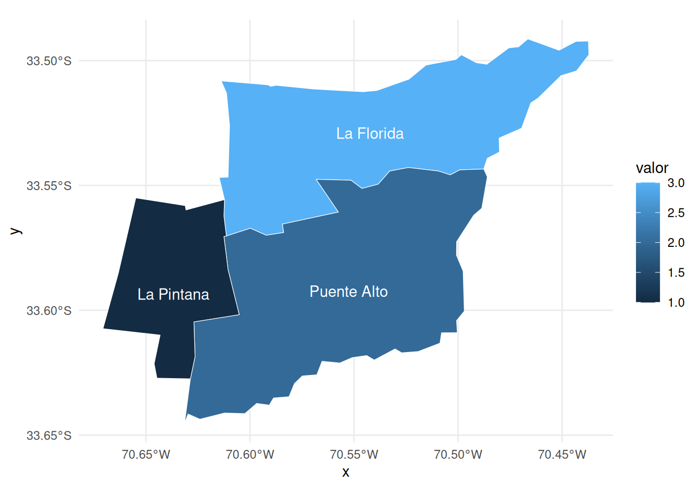

El paquete territorial puede ser usado para facilitar la visualización de datos espaciales de nivel comunal. Con un par de funciones de limpieza podemos hacer que cualquier base de datos con nombres de comunas (incluso mal escritos) puedan convertirse en mapas.
En este tutorial crearemos datos de ejemplos, usaremos territorial para limpiarlos, les agregaremos los polígonos comunales desde chilemapas, y finalmente los visualizaremos con ggplot2.
Datos de ejemplo
Creemos una tabla de datos de ejemplo:
datos <- tribble(
~comuna, ~valor,
"LA FLORIDA", 3,
"PUENTE ALTO", 2,
"LA PINTANA", 1)
datos# A tibble: 3 × 2
comuna valor
<chr> <dbl>
1 LA FLORIDA 3
2 PUENTE ALTO 2
3 LA PINTANA 1Confirmamos que estos datos tienen nombres de comuna incorrectos (escritos con mayúsculas) gracias a territorial::validar_comunas():
datos |>
validar_comunas(comuna)! Resumen: 3 casos de comunas que no conciden con comunas correctamente escritas (ver `territorial::comunas()`): LA FLORIDA, PUENTE ALTO y LA PINTANA! Mayúsculas: 3 casos de comunas escritas en mayúsculas: LA FLORIDA, PUENTE ALTO y LA PINTANA✖ Validación de comunas: se encontraron 6 problemas con las comunas! Usa `territorial::limpiar_comunas()` para solucionarlos.Obtener mapas comunales
En el ecosistema de R, el paquete {chilemapas}, desarrollado por Mauricio Vargas facilita el acceso a polígonos comunales y regionales de Chile, perfectos para visualizar datos en mapas. Pero quizás la principal dificultad al crear mapas comunales de Chile es agregarle los polígonos a los datos de nivel comunal.
Con chilemapas obtenemos los polígonos de las comunas de Chile con chilemapas::mapa_comunas:
# install.packages("chilemapas")
library(chilemapas)Cargando paquete requerido: sfLinking to GEOS 3.12.1, GDAL 3.8.4, PROJ 9.4.0; sf_use_s2() is TRUELa documentacion del paquete y ejemplos de uso se encuentran en https://pacha.dev/chilemapas/.
Visita https://buymeacoffee.com/pacha/ si deseas donar para contribuir al desarrollo de este software.
mapa <- chilemapas::mapa_comunas
mapa# A tibble: 345 × 4
codigo_comuna codigo_provincia codigo_region geometry
<chr> <chr> <chr> <MULTIPOLYGON [°]>
1 01401 014 01 (((-68.86081 -21.28512, -68.921…
2 01403 014 01 (((-68.65113 -19.77188, -68.811…
3 01405 014 01 (((-68.65113 -19.77188, -68.635…
4 01402 014 01 (((-69.31789 -19.13651, -69.271…
5 01404 014 01 (((-69.39615 -19.06125, -69.400…
6 01107 011 01 (((-70.1095 -20.35131, -70.1243…
7 01101 011 01 (((-70.09894 -20.08504, -70.102…
8 02104 021 02 (((-68.98863 -25.38016, -68.987…
9 02101 021 02 (((-70.60654 -23.43054, -70.601…
10 02201 022 02 (((-67.94302 -22.38175, -67.955…
# ℹ 335 more rowsPara agregar estos polígonos a los datos podemos usar left_join() (revisa este tutorial), pero tenemos el problema de los polígonos vienen solamente con códigos comunales, y nuestros datos no tienen esa variable, sino apenas los nombres de las comunas en mayúscula.
Limpiar datos comunales
Podemos usar territorial para limpiar los nombres de comunas y luego convertirlos a códigos únicos territoriales.
Primero limpiamos los nombres de comunas para llevarlos a una escritura estandarizada y correcta con territorial::limpiar_comunas():
datos_2 <- datos |>
mutate(comuna = limpiar_comunas(comuna)) ℹ Limpiando 3 nombres de comunas (3 son distintas)→ Paso 1: confirmar comunas correctasℹ De las 3 comunas distintas, ninguna tiene nombres 100% correctos. Los siguientes pasos intentarán la limpieza...→ Paso 2: coincidencias por limpieza de textoℹ A partir de la limpieza de texto, se limpiaron 3 de 3 comunas: La Florida, Puente Alto y La Pintana→ Paso 3: casos especialesℹ No se encontraron casos especiales→ Paso 4: coincidencias aproximadas de texto! No se limpiaron comunas como parte de este paso→ Conclusión de limpieza de comunas✔ De las 3 comunas distintas, se limpiaron 3 en total (100%)
datos_2# A tibble: 3 × 2
comuna valor
<chr> <dbl>
1 La Florida 3
2 Puente Alto 2
3 La Pintana 1Luego podemos agregar los códigos comunales a partir de los nuevos nombres de las comunas con territorial::as_codigo_comuna():
datos_3 <- datos_2 |>
mutate(codigo_comuna = as_codigo_comuna(comuna))
datos_3# A tibble: 3 × 3
comuna valor codigo_comuna
<chr> <dbl> <dbl>
1 La Florida 3 13110
2 Puente Alto 2 13201
3 La Pintana 1 13112Agregar polígonos comunales a datos comunales
Ahora que los datos tienen códigos comunales, podemos agregarle los polígonos con un left_join(), pero primero tenemos que convertir los códigos comunales del mapa a formato numérico:
mapa <- mapa |>
mutate(codigo_comuna = as.numeric(codigo_comuna))Visualizar mapas de comunas
Ahora los datos cuentan con los polígonos apropiados, y podemos visualizarlos siguiendo este tutorial:
library(ggplot2)
library(sf)
datos_4 |>
st_as_sf() |>
ggplot() +
aes(fill = valor) +
geom_sf(color = "white") +
geom_sf_text(
aes(label = comuna),
color = "white"
) +
theme_minimal()Warning in st_point_on_surface.sfc(sf::st_zm(x)): st_point_on_surface may not
give correct results for longitude/latitude data
Revisa este tutorial para conocer el proceso completo.